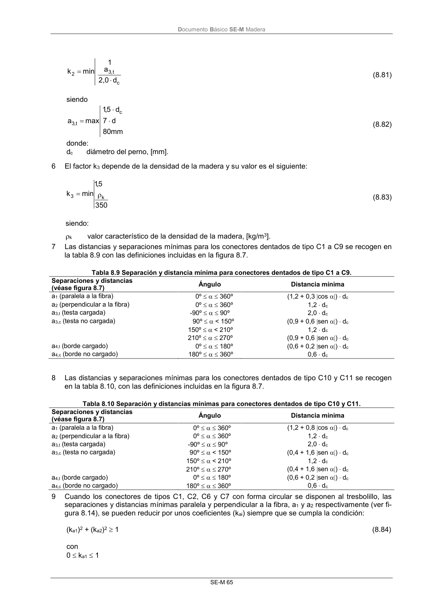
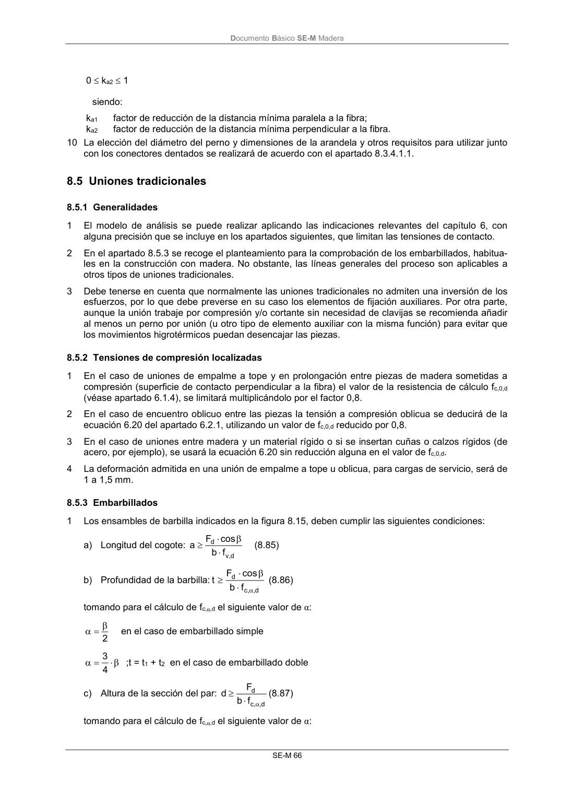

DB-SE-M Madera · edición 2019-12-20 · capa oficial
Documento DB-SE-M-oficial · SHA-256 del PDF 26b5819839ebfda78b0b119c5e76a0a37773b0d763c05688541870075df93718
Copia fiel del PDF fuente · Fuente oficial
Ficha de la disposición en la fuente oficial
Formatos: JSON del segmento · Markdown
0 ka1 1 DocumentoBásico SE-M Madera SE-M 66 0 ka2 1 siendo: ka1 factor de reducción de la distancia mínima paralela a la fibra; ka2 factor de reducción de la distancia mínima perpendicular a la fibra. 10 La elección del diámetro del perno y dimensiones de la arandela y otros requisitos para utilizar junto con los conectores dentadosse realizará de acuerdo con el apartado 8.3.4.1.1.

